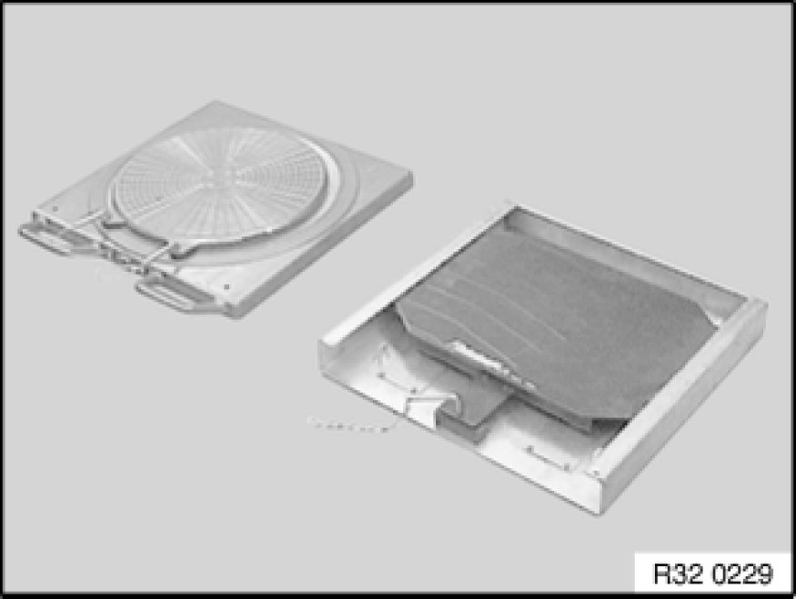

3. System Description
3. System Description
3.1 BMW Kinematic Diagnosis System 1, based on the Beissbarth ML4000
The KDS 1 is available in two different designs at no extra charge:
1. Mobile workstation
2. Mobile compact cabinet
The larger workstation offers a small storage area for accessories, whilst the compact cabinet is mobile and ideal for restricted working areas. Both variants can be supplied as a cableless measuring system (infrared). From the point of view of measuring technology, there is only a difference in the handling and equipping of the system. For both designs, the four measuring sensors are stored in integrated inserts with rechargeable battery charging points. When automatically charged over night, the measuring sensor batteries provide enough power for 10 hours of continuous use.
3.2 Computer
- The KDS 1 system comprises tested and reliable industrial components. The computer is an IBM-compatible, 32-bit Intel processor with CD ROM drive to the industry standard.
3.3 Graphical tablet
- All functions are shown in graphical form on a "pictogram" panel. The panel is protected by a plexiglass cover. It can easily be replaced if more extensive design modifications are necessary. The operator interface has no membrane and is thus protected against damage. The main functions are activated by clicking the icon with the digital pen.
3.4 Equipment cabinet
- The PC with graphic monitor and removable operating panel, supports for the measuring sensors, the remote control and the A4 printer are integrated into the workstation. The charging station is located in the cabinet and can also be connected to the measuring sensors and the remote control using the plug-in cables (operating while simultaneously charging the batteries).
3.5 Remote display
A cableless remote display can be supplied on request. The remote control keys are only active during measuring and adjustment (not for customer data input, or if selecting a vehicle or editing the setpoint data etc.). The following displays are supported by the remote control:
- Measured value with setpoint / actual comparison and tolerance bar
- Steering graphics for steering routines
- Live overview of the track / camber values with a setpoint / actual comparison
- Rim run-out compensation
3.6 Measuring sensors with CCD camera

The measuring sensors are each equipped for automatic measurement with two CCD cameras and their own processor for the cableless infrared transmission of data with integrated batteries. Benefits:
- No temperature deviation
- Very high measuring resolution (the track could theoretically be measured in angular seconds)
- Single track range of more than ± 9 degrees for the constant display of toe-in when changing the tie-rod ends
- Exact system accuracy, i.e. when carrying out measurements at the vehicle following rim run-out compensation, the toe-in and camber measurements are accurate to 2 angular minutes
3.7 BMW Quick-acting clamp
- BMW quick-acting clamp for holding the measuring sensors precisely in position and measuring without rim run-out compensation.
- Note: Any existing quick-acting clamps, e.g. from older F1600s or ML-3000s, must not be used on the BMW KDS.
3.8 Rotating / sliding plates

- Electronic precision rotating plates for the front wheels with integrated sensor (360 degree measuring range)
- Stable sliding plates for the rear wheels with a swivelling / rotating top plate
- Accessories: Cover hood for aluminium rotating plates
3.9 Sensor pins
- A new BMW light alloy wheel (styling no. 18) has been available as optional equipment from April 1993. When measurements are being made on vehicles with these wheels, new sensor pins are required for the quick-acting clamps of the recommended wheel alignment equipment.
- The new sensor pins are included in the scope of supply for new deliveries of KDS 1
(order number: BS 90 19 11).
3.10 Spoiler adapter

- In the case of vehicles with very low spoilers, the sensor beam may be broken by the spoiler between the measuring sensors. This primarily occurs in front of the front axle.
- The spoiler adapter is used here as a connecting element between the measuring equipment clamp and the measuring sensor. Thanks to the adapter, the sensors are placed 50 mm lower, thus allowing the sensor beam to move freely below the spoiler.
3.11 Quick-clamping units
- Quick-clamping units for wheel alignment on non-BMW vehicles with rim run-out compensation.
- Rims without sensors boreholes (rims for BMW vehicles from other manufacturers)
3.12 Retainers
- The most varied clamping options for the measuring equipment are possible thanks to the versatile retainers and the rubber-coated thrust pieces, even on exotic light-alloy rims.